CLEAR KAYAK LAB
透明だからこそ、
自然との境界線が
消えていく。
乗るためではなく、自然に没入するためのカヤック
01 — BRAND CONCEPT
CONCEPT
水上アクティビティの新しい楽しみ方で、あなたの施設だけの「特別な体験」を作ってみませんか？
Clear Kayak Lab では、観光地やリゾート施設へのクリアカヤック導入をサポートしています。
海、湖、川。
目の前に広がる景色を遮らず、水面と水中の世界をそのまま感じられる。
Clear Kayak Lab は、「見るためのカヤック」ではなく、「自然に没入するためのカヤック」を追求しています。
02 — What Makes It Different
DIFFERENCE
水面を移動する乗り物から、水中景観を体験するアクティビティへ
カヤックというと「水の上を力強く漕いで進むアクティビティ」というイメージが強いですよね。
でも、クリアカヤックが体験させてくれるのは、まったく別の世界。
水面の上を進むだけでなく、「足元に広がる水中景観そのものを特等席で楽しむ」という、新しいアクティビティなんです。
船体すべてが透明だから、まるで水に浮いているような不思議な感覚。足元を通り過ぎる魚たちや、きらめくサンゴ礁、神秘的な湖底の景色が、遮るものなく目に飛び込んできます。
この初めての感動があるからこそ、全国の観光施設やリゾート施設で、いま全国のリゾート地や観光施設で、注目のコンテンツとして選ばれています。
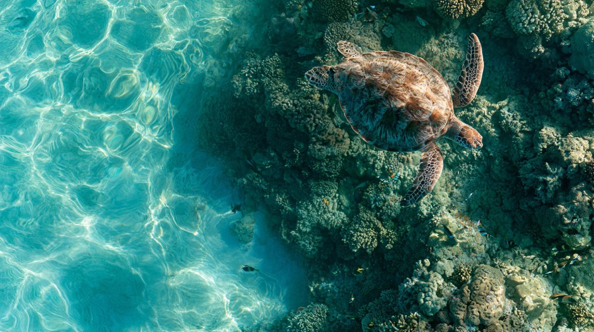
| 項目 | クリアカヤック | 通常のカヤック |
|---|---|---|
| 水中観察 | ◎（足元すべてが展望窓） | ×（水上のみ） |
| 写真・動画撮影 | ◎（ドローンや水中撮影で映える） | △（一般的な風景写真） |
| 話題性・集客力 | ◎（未体験層への強いフック） | △（定番アクティビティ） |
| 他施設との差別化 | ◎（独自のプレミアムツアー化が可能） | △（価格競争になりやすい） |
03 — Design Philosophy
DESIGN
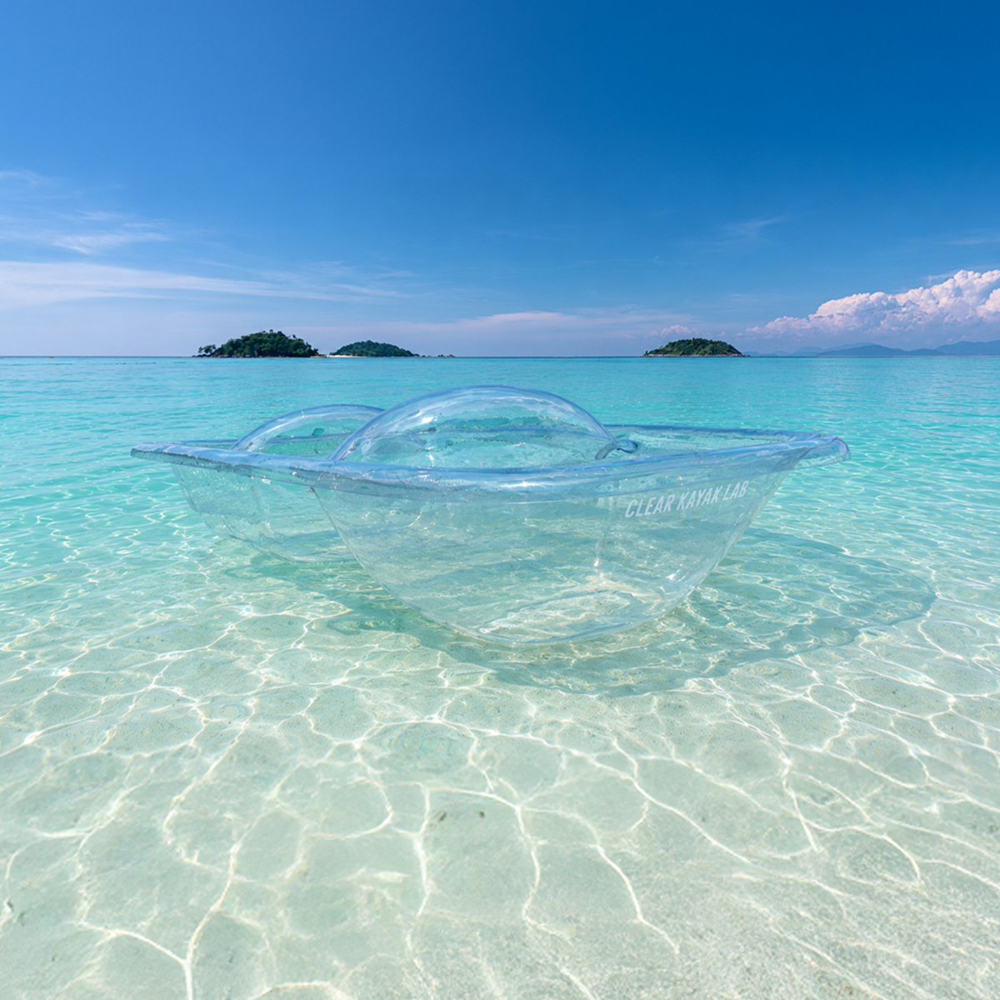
主役はブランドではなく、目の前の自然であるべきだ
私たちはこのクリアカヤックを単なる「売るための製品」だとは思っていません。
ゆったりと水面を漂う時間。足元に広がる美しい景色。大切な家族や仲間と「きれいだね」と言い合うひととき。その時間のすべてが、お客様にとっての「一生ものの体験」だと思っています。
だからこそ、私たちはある決断をしました。
「ブランドの名前をアピールすることよりも、お客様の没入感を最優先したい」
Clear Kayak Lab のロゴは、船体のいちばん後ろにそっと配置してあります。それは、乗っているときも、写真を撮るときも、できる限り視界に入らないようにするためです。
せっかくの素敵な写真や映像に残るのが、私たちのブランド名である必要はありません。その場所でしか出会えない美しい景色と、お客様の笑顔だけでいい。
記憶に残るべきなのは、ロゴではなく、その瞬間に感じた感動そのものです。
私たちは、自然そのものを主役にするためのデザインを追求しました。
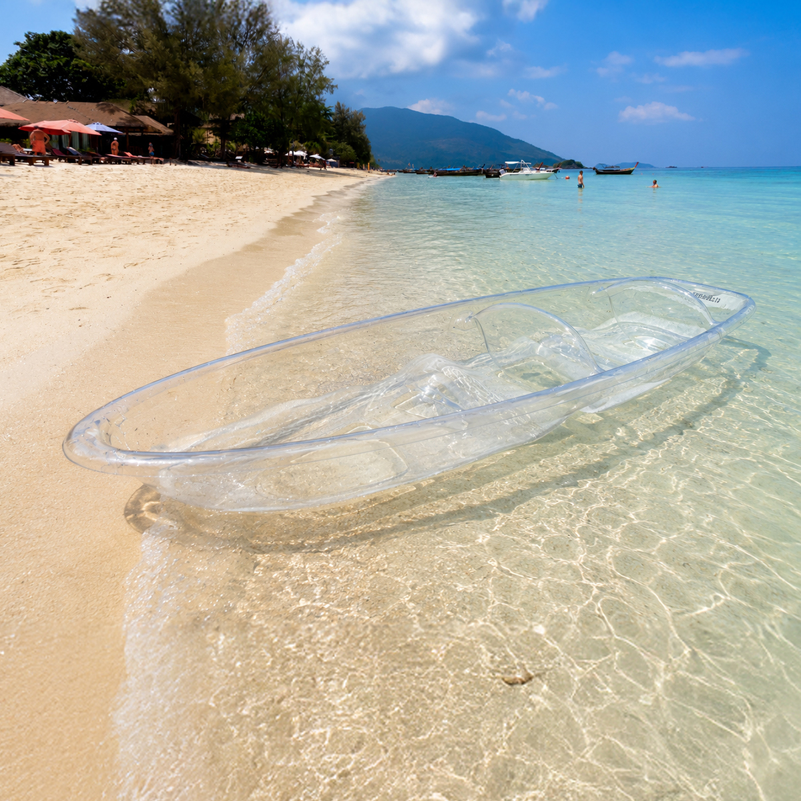
04 — Product Features
PRODUCT
「フレームのグラつき」も「余計な人工物」も削ぎ落とした、完全一体成形ボディ。
従来のクリアカヤックに多かった「補強用フレーム」や「後付けシート」を一切なくし、8mm厚の完全一体成型を実現。
ガタつきのない高い強度と耐久性を誇ると同時に、乗る人の視界を一切邪魔しません。
事業者様が安心して長く運用できる確かな品質と、お客様が水面とひとつになる圧倒的な没入体験を両立した、次世代のクリアカヤックです。
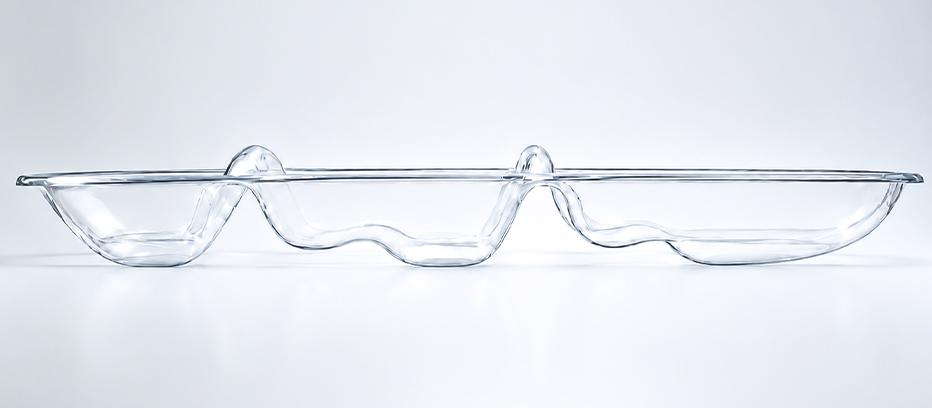
船体には約8mm厚の一体成型構造を採用し、見た目の美しさだけでなく、しっかりとした強度にも配慮しています。補強構造によってボディ全体の剛性を高め、安定感のある造りになっています。船底は水の抵抗を抑えやすい滑らかなラインに設計し、従来のクリアカヤックにはない美しさと機能性を両立しています。
クリアカヤックの導入にあたり、「フレームの歪みやパーツの不具合で運用が止まる」「補強パーツがせっかくの景観を台無しにする」といったお悩みはありませんか？
Clear Kayak Lab のカヤックはパーツの不具合リスクをなくし、視界に一切の無駄がない圧倒的な開放感を実現しました。
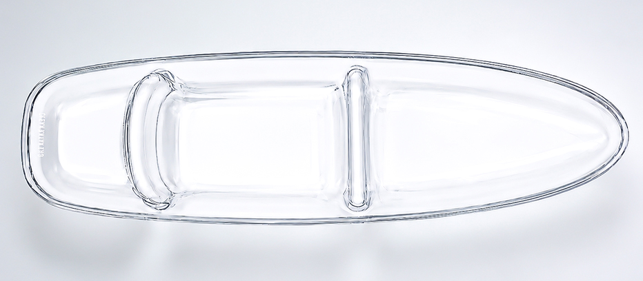
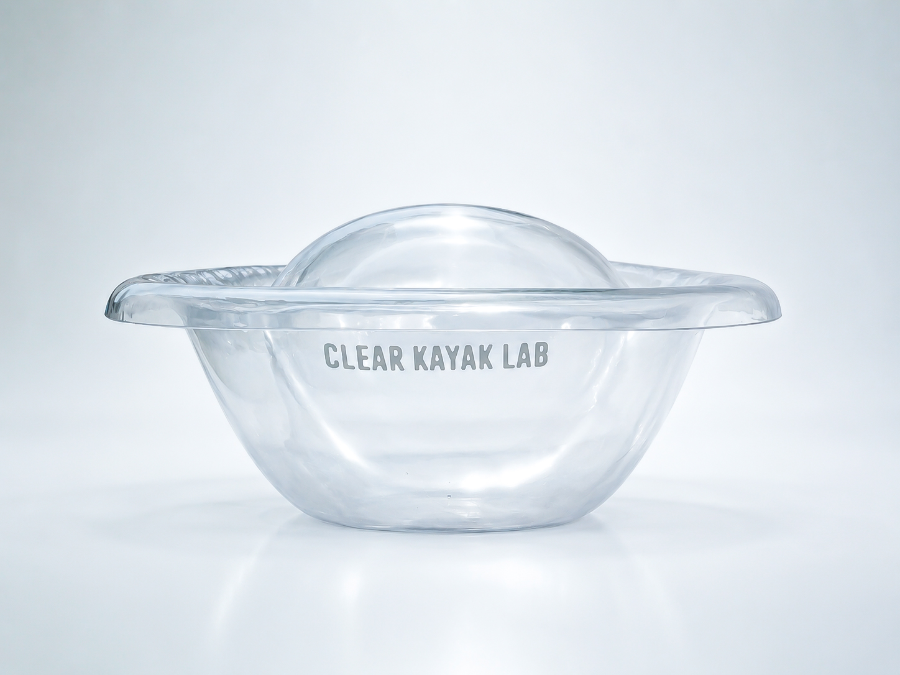
優先したのはカヤックに乗る人が感じる自然との一体感と没入感です。ブランドを大きく主張するのではなく、カヤックの上で過ごす人の目線にできるだけ映り込みにくい船尾にロゴは配置しています。
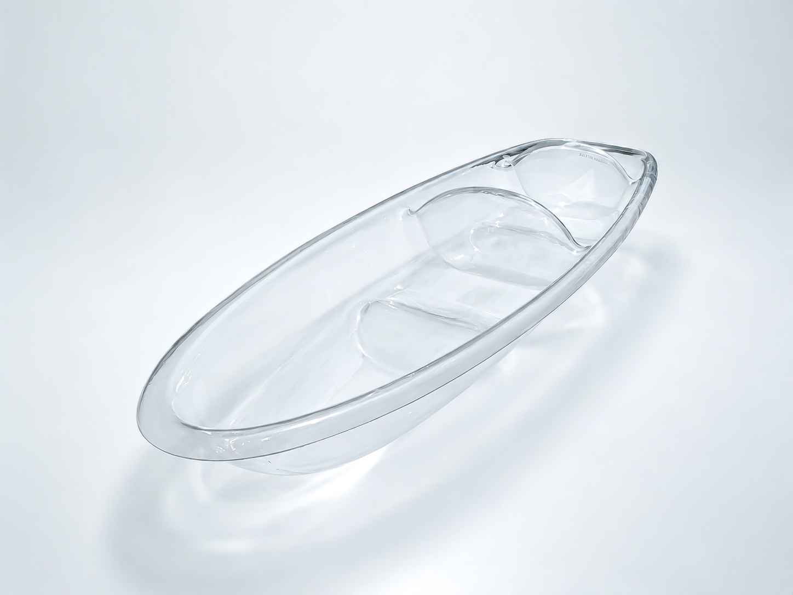
斜め上から見ることで際立つ、透明な船体と滑らかなボディライン。乗っている時間はもちろん、ビーチに置かれているときや写真・映像に収めたときまで美しく見えることを意識した、CLEAR KAYAK LABだけのデザインです。
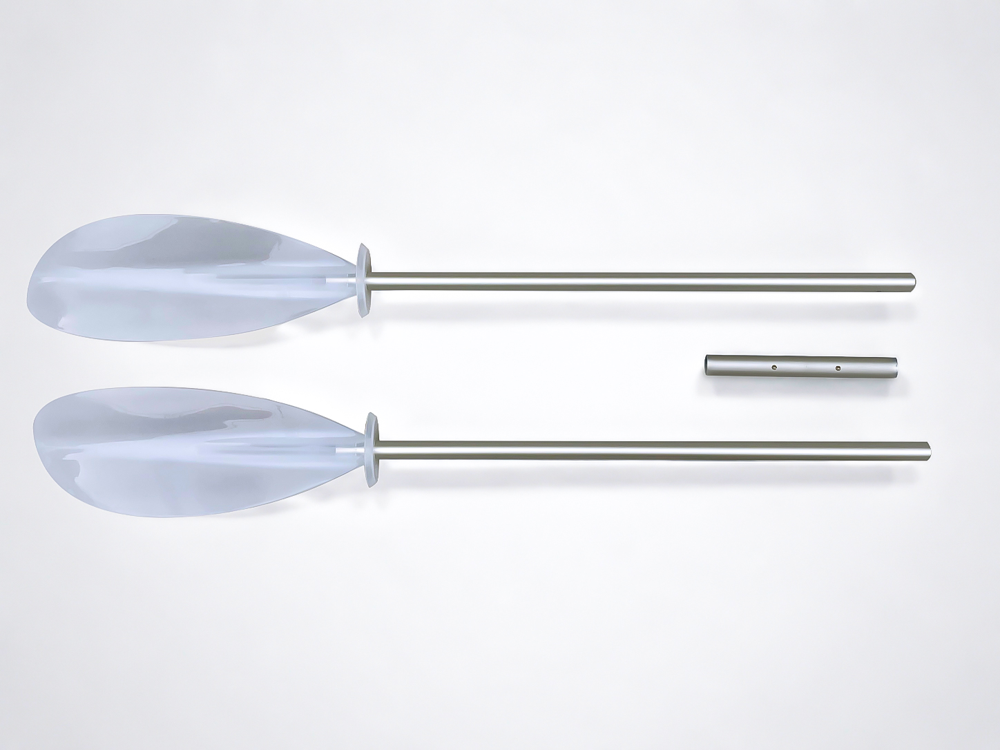
パドルには、クリアカヤックのデザインと調和する半透明のブレードを採用。シャフトを含めて3ピースに分割できる構造となっており、使用しないときはコンパクトにまとめることができます。
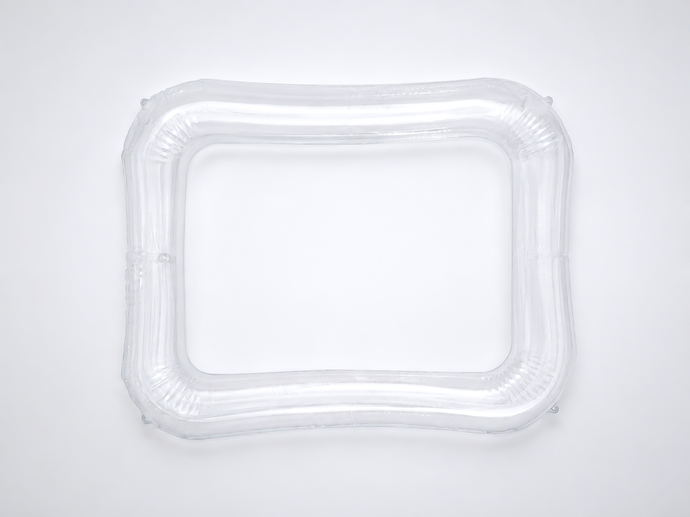
船底とシート部分の溝に合わせて装着する専用フロートを用意。船体内部に収まるよう設計することで、クリアカヤック本来の外観を大きく変えることなく、浮力と安定感を補強します。
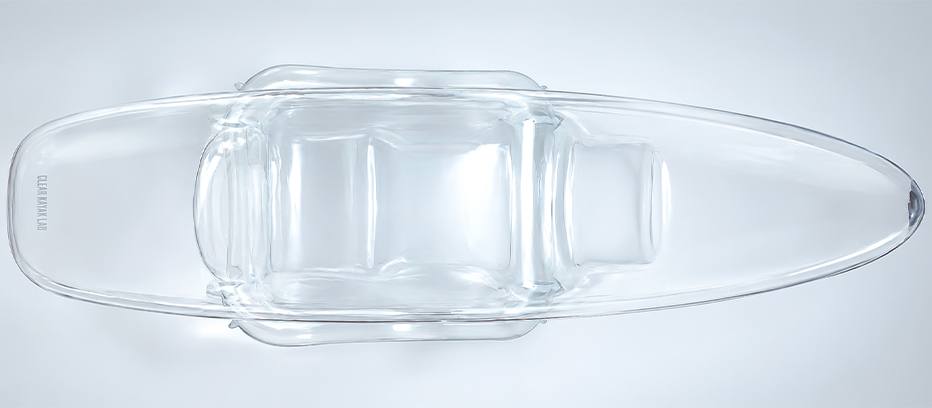
CLEAR KAYAK LABの船体は、フロートを装着しない状態でも十分な浮力と安定感を持つよう設計されています。専用フロートは、その性能を補うための必須装備ではなく、利用シーンや乗員構成に応じて、もう一段安心感を加えたいときのカスタマイズ用サポートアイテムです。
船底およびシート部分の溝にフィットさせることで、フロートとクリアカヤックが一体化します。透明な船体による開放感を維持しながら、浮力と安定感を高める設計です。
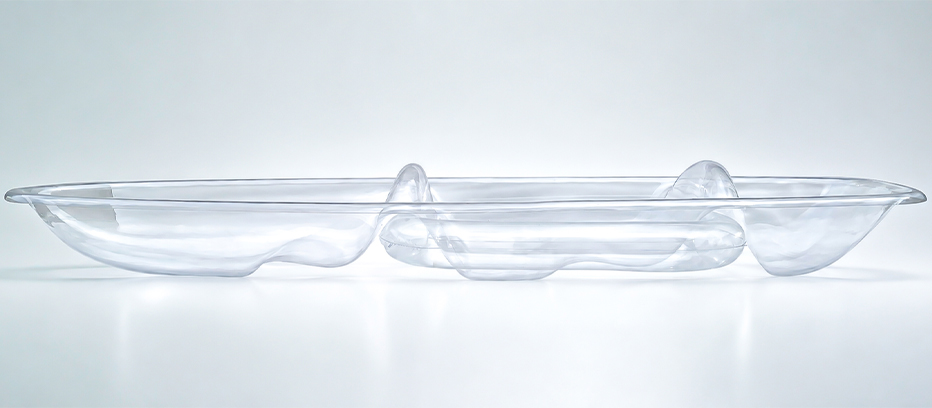
| 項目 | 特徴 | 技術・素材の詳細 |
|---|---|---|
| 素材 | 高品質ポリカーボネート | 航空機や防弾ガラス、医療機器にも使用されるドイツ・バイエル社製を採用。 |
| 耐衝撃性 | 高い耐久性を実現 | 大人の男性がハンマーで叩き続けても割れないほどの強度。岩場の多い海や湖でも安心です。 |
| UV対策 | 黄ばみや劣化を抑制 | 特殊なUVコーティングを施しているため、日焼けによる黄ばみを防ぎ、透明感を長くキープ。 |
| 安定性 | 初心者でも扱いやすい設計 | 人間工学に基づいて計算された船体形状により、高い復元力を持ち転覆を防止。 |
| 用途 | 幅広い水辺に対応 | 海・湖・河川など、あらゆるロケーションで安定した走行性能を発揮。 |
05 — Business Value
BUSINESS
水辺のロケーションを活かして、新しい集客力と付加価値を
お気づきの通り、クリアカヤックは「ただ置いてあるだけ」でも強い存在感を放ちます。ビジネスに導入することで、以下のようなうれしい変化が生まれます。
「水中が見えるツアー」という独自の価値により、近隣の競合施設に対して一歩抜け出す強力な強みになります。
透明なカヤックに乗っている姿や、上空からのドローン撮影は、それだけでSNS上の最高の主役です。体験したお客様が自発的にシェアしたくなるので、広告費をかけずに認知が広がっていきます。
ここでしか味わえないプレミアムな体験だからこそ、通常のレンタルやツアーよりも高い価格設定が可能になり、施設の価値を高めます。
06 — Solutions
SOLUTIONS
あなたの施設の水辺に新しい価値を
プライベートビーチやプールを活かした宿泊者限定アクティビティとして、滞在の満足度をグッと高め、ホテル内での新しい思い出作りを提供できます。
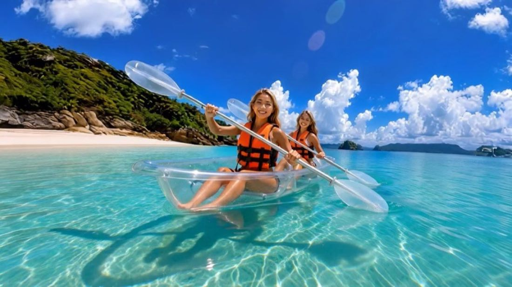
TYPE 02「水中観察ツアー」「サンセット・ナイトツアー」など、ロケーションを活かした高単価な新メニューの構築。
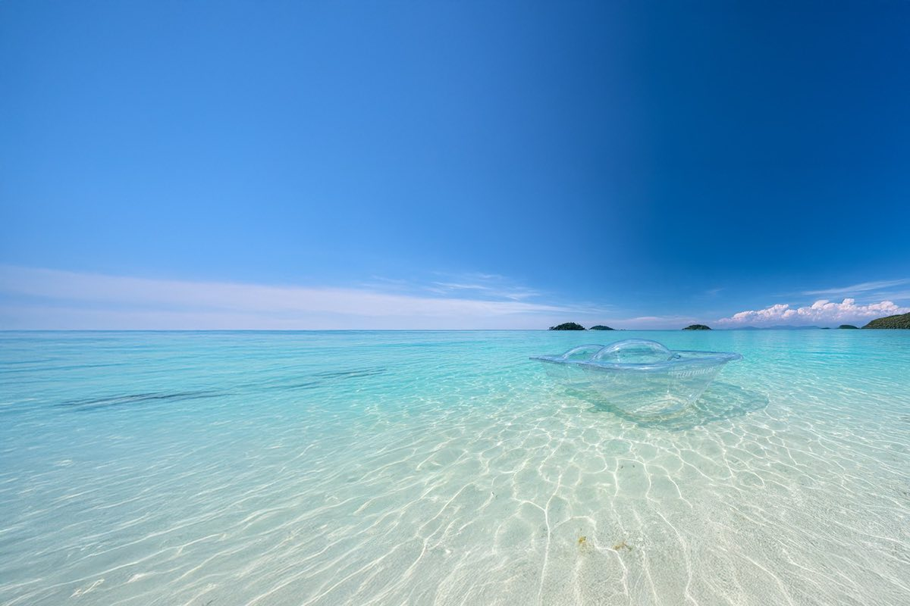
TYPE 03美しい湖畔や清流を活かした自然体験型コンテンツとして、トレンドに敏感な若年層やファミリー層の心を掴みます。
07 — COMPARISON
OLD VS NEW
フレーム式の旧型製品 VS
フレームレス一体成形のCLEAR KAYAK LAB
| 比較項目 | 他社旧型製品 | CLEAR KAYAK LAB |
|---|---|---|
| 組立時間 | フレームやシートの取り付けに約1〜2時間 | 組み立て不要。すぐに使用可能 |
| 保管性 | 重ねて収納できず、保管スペースが必要 | 重ねて収納可能。複数艇でも省スペースで保管でき、悪天候時の移動・収納もスムーズ |
| 安全性 | 金属フレームが直射日光で高温になるほか、フレーム端部によるケガのリスクも | フレームレス一体成形。熱を持つ金属フレームや鋭利な接合部がなく、安全性に配慮した設計 |
| 耐久性 | 金属フレームの腐食や、樹脂製ステー・小型部品の劣化、破損・紛失リスク | 腐食する金属部品や劣化・脱落しやすい接合パーツをなくし、ボディを厚くすることで剛性・耐衝撃性を向上 |
| 浮力 | 2人乗りとしては小型で、サブフロートを装着しても波や揺れの影響を受けやすい。激しく揺らすと水が入ってくることも | 長さ3800mm・幅940mmと2人乗りには十分なサイズ。専用フロートでさらに浮力を確保。1人当たり110kg（計220kg）の荷重テストも難なくクリア |
| 視覚情報 / SNS映え | シートやフレーム、ロゴが視界や写真に入り、水中景観を遮ってしまう | フレームレスによるパノラマビュー。ロゴも船尾側に配置し、自然への没入感と写真映えを追求 |
| 乗り心地 | フレーム固定式シートは揺れやすく、急な座面角度や船体のきしみ音も負担に | 船体そのものを緩やかな曲線の座面に設計。自然な姿勢でリラックスして楽しめる |
| 旋回性 | 水の抵抗を受けやすく、操作に慣れるまで時間がかかる | 船底を凹凸の立体形状にすることで水が横に抜け、水流をコントロールし旋回性を向上。操作時の負担と疲労を軽減 |
08 — FAQ
FAQ
あらゆる水辺のロケーションに、新しい価値を
製品の品質やメンテナンス、導入・購入、実際の活用方法まで、 CLEAR KAYAK LABについてよくいただくご質問をまとめました。
09 — Contact
CONTACT
無料相談・お見積もり
「遠方のリゾート地だけど、ちゃんと納品してもらえる？」「大口発注だと価格はどれくらい変わる？」など、気になることがあれば何でもお気軽にご相談ください。
私たちは、製品をただお送りするだけでなく、遠方への確実な納品手配から、導入時の細かなご質問まで責任を持って対応いたします。